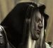

Les Terres de Kirin Tor
Mauldred
Points : 11

Joué par :
[ Information masquée ]
Age : 35
Lieu de naisance : Andorhal
Signe de naissance : Le Sanglier Lubrique
Sexe : Homme
Race : Humain
Faction : Alliance
Formation : Paladin
Niveau : 47
Guilde : Mercenaires du Reikland
Artisanat 1 : Herboriste
Artisanat 2 : Alchimiste
Envoyer un MP
Informations hrp : Dangorn était tout sauf un bon chevalier en armure rutilante et au service des opprimés. Il était un mercenaire cupide, alcoolique, même si sa foi en la Lumière ne l'a jamais quitté. Il est mort à présent, son âme détruite par Encdaël et les Prophètes de l'Apocalypse...
Description : *AAAARGH !*
"Dangorn, qu'est-ce que c'était ?
- Ne bouge pas, Cunégonde, je vais voir..."
Le jeune paysan tira une courte dague de son ceinturon, une dague-coupe-papier qu'il avait eu pour son anniversaire. Soudain quelquechose bougea dans les fourrés. Dangorn s'en approcha furtivement. Le buisson continuait à bouger et à faire des gargouillis étranges.
Une main décharnée essaya d'attraper le cou du jeune homme. Dangorn se dégagea à temps, et trancha le membre. La main putréfiée tomba au sol, et un zombie manchot sortit du buisson. Cunégonde cria. Dangorn se jeta sur le mort-vivant et avec la dague lui lacéra ses restes. A la fin du combat, Dangorn avait du sang coagulé partout sur sa chemise et les bras complètement griffés par les ongles du zombie, mais ce dernier ne bougeait plus. Le garçon aux cheveux blancs se retourna : Cunégonde était partie.
Entendant des cris et des bruits de combats du côté du village, Dangorn courut vers sa maison : trop tard, le feu avait déjà embrasé le domicile familial, ainsi que d'autres maisons, et les responsables du désastre avaient disparu. Après avoir éteint le feu en partie à l'aide d'un seau et du puits le plus proche, le jeune Dangorn tenta de retrouver ses parents. Hélas, ils avaient succombé tous les deux. Beregorn avait dû se défendre contre ses mystérieux agresseurs, son corps arborait de profondes blessures, et sa tête fut trouvée un peu plus loin, près d'une faux ensanglantée. Alicia fut retrouvée écrasée sous une poutre calcinée.
Dangorn était au comble du désespoir : à cause de sa négligence il n'avait rien pu faire pour sauver ses parents. S'il n'était pas parti roucouler dans la forêt avec Cunégonde, la fille du forgeron, il aurait pu les défendre. Triste à mourir et furieux contre lui-même, il se mit à jeûner...
Son désespoir était tel que pendant douze jours et douze nuits il refusa toute nourriture et toute boisson, voulant sûrement se laisser mourir. Au bout de cette période de jeûne, il eut soudain une révélation, lorsqu'il vit un Paladin, engoncé dans son armure brillante, en train de rassurer les habitants du village qui avaient été touchés par la catastrophe.
Il cessa de jeûner, et déclara une promesse sur la tombe de ses parents : "Je deviendrai un Paladin, défenseur de l'Ordre et de la Justice, et ainsi je vous vengerai, je vengerai Andorhal, je vengerai Lordaeron...".
C'est ainsi que Dangorn Mauldred, plein de rancoeur, parcouru les Royaumes de l'Est à la recherche d'un monastère de la Sainte Lumière Sacrée afin de commencer un entraînement. Entre-temps, il fit la rencontre de Floli Meuh-Naïrolfas la guerrière elfe de la nuit qui avait été élevée par des taurens, et dans une auberge, alors qu'il faisait une halte, il entendit parler de la fameuse Confrérie des Mercenaires du Reikland...
(Toute l'histoire sur http://www.wow-roleplay.com/vb/showthread.php?t=104 )
Ère du Renouveau [2]
Lune de la Force [1]
Décade du Panda [1]
L'Histoire du Paladin Mauldred
Oyez, compagnons, l'histoire du Paladin Mauldred que voici :
Introduction
Tout commença un soir pluvieux, à Andorhal. Dans la modeste demeure du paysan Beregorn Mauldred et de sa femme Alicia, cette dernière accouchait d'un fils. Par la suite ils décidèrent de l'appeler Dangorn.
A l'âge de cinq ans, Dangorn aidait déjà son père aux travaux des champs, il avait les cheveux blancs depuis sa naissance, comme ceux de son père, ce qui étonnait quelques-un de ses camarades. Ses yeux, d'un vert vif, pétillaient de bonheur lorsque sa mère, pour l'endormir, lui racontait des histoires de preux chevaliers tuant des dragons pour sauver de belles damoiselles en détresse. Mais cette époque de jouissance prit soudainement fin avec l'arrivée de la Légion Ardente, revenue pour semer la mort et la destruction. Dangorn avait atteint l'âge de 17 ans. Balgorn prit la décision d'emmener sa famille hors de portée du mal qui s'abbatait sur Lordaeron, avec l'espoir de pouvoir revenir à Andorhal dès que les troubles auraient cessé. Malheureusement, les malheurs ne firent qu'empirer (en effet, une dizaine d'années plus tard, le prince Arthas de Lordaeron, le noble de sang dont on disait qu'il était pur de coeur, finira par trahir son propre peuple après avoir occit son propre père. Ce ne sera plus la Légion, mais le Fléau qui continuera de ravager le pays).
Beregorn avait fuit jusque dans les Royaumes de l'Est, pour éviter le funeste destin qui l'attendait. Mais il n'avait fait que repousser l'échéance...
Trois mois plus tard, des évenements obscurs survinrent dans la petite contrée du Goldshire, où les parents de Dangorn avaient élu domicile. Des maisons furent pillées, incendiées ou même rasées, il y eut beaucoup de victimes. Beregorn fut retrouvé mort, décapité par sa propre faux, et Alicia écrasée sous une poutre, dans les ruines calcinées de sa maison que les mystérieux agresseurs avaient brûlé avant de s'enfuir. Dangorn alors âgé de 18 ans, était le seul membre de sa famille ayant survécut au drame.
Chapitre 1 : La mort de Beregorn et d'Alicia
"Où est le fiston ?" demanda Beregorn à sa femme.
"Oh, tu sais, il doit encore être parti se promener dans la forêt...
- Tu lui as dit de ne pas trop s'éloigner du village ? S'il s'aventure trop loin, ça peut devenir dangereux...
- D'un autre côté il a dix-huit ans, maintenant. Je crois qu'il sait être prudent.
- A son âge, je ne l'était pas, souviens-toi..." répliqua le père avec un sourire.
Alicia se souvenait, et elle sourit aussi.
"Oui mais toi mon chéri, c'était différent, tu était amoureux de moi et tu aurais bravé tous les périls pour venir me rejoindre.
- Qui sait si Dangorn n'est pas amoureux ?
- Oh, je ne pense pas..." répondit la mère.
A quelques kilomètres de là, à l'orée de la forêt d'Elwynn...
"A Elbereth Gilthoniel
Silivren penna miriel
O menell aglar elenath !
Na-chaered palan-diriel
O galadhremmin ennorath,
Fanuilos, le linnathon
nef aear, si nef aeron !
- C'est beau, ça veut dire quoi ?
- C'est de l'elfique, Cunégonde, ça vient d'une histoire que j'ai lue, avec des gnomes qui allaient se débarrasser d'un anneau magique, et en chemin ils rencontraient des elfes, des hommes et des nains. L'un des hommes était épris d'une belle princesse elfe, et à la fin il devenait le roi et elle la reine.
- Mais tu ne sais pas lire !
- Si, un peu. Enfin... c'est vrai, je n'ai pas lu l'histoire, on me l'a racontée.
- Hihi, Dangorn, tu me feras toujours rire...
*AAAARGH !*
"Dangorn, qu'est-ce que c'était ?
- Ne bouge pas, Cunégonde, je vais voir..."
Le jeune paysan tira une courte dague de son ceinturon, une dague-coupe-papier qu'il avait eu pour son anniversaire. Soudain quelquechose bougea dans les fourrés. Dangorn s'en approcha furtivement. Le buisson continuait à bouger et à faire des gargouillis étranges.
Une main décharnée essaya d'attraper le cou du jeune homme. Dangorn se dégagea à temps, et trancha le membre. La main putréfiée tomba au sol, et un zombie manchot sortit du buisson. Cunégonde cria. Dangorn se jeta sur le mort-vivant et avec la dague lui lacéra ses restes. A la fin du combat, Dangorn avait du sang coagulé partout sur sa chemise et les bras complètement griffés par les ongles du zombie, mais ce dernier ne bougeait plus. Le garçon aux cheveux blancs se retourna : Cunégonde était partie.
Entendant des cris et des bruits de combats du côté du village, Dangorn courut vers sa maison : trop tard, le feu avait déjà embrasé le domicile familial, ainsi que d'autres maisons, et les responsables du désastre avaient disparu. Après avoir éteint le feu en partie à l'aide d'un seau et du puits le plus proche, le jeune Dangorn tenta de retrouver ses parents. Hélas, ils avaient succombé tous les deux. Beregorn avait dû se défendre contre ses mystérieux agresseurs, son corps arborait de profondes blessures, et sa tête fut trouvée un peu plus loin, près d'une faux ensanglantée. Alicia fut retrouvée écrasée sous une poutre calcinée.
Dangorn était au comble du désespoir : à cause de sa négligence il n'avait rien pu faire pour sauver ses parents. S'il n'était pas parti roucouler dans la forêt avec Cunégonde, la fille du forgeron, il aurait pu les défendre. Triste à mourir et furieux contre lui-même, il se mit à jeûner...
Son désespoir était tel que pendant douze jours et douze nuits il refusa toute nourriture et toute boisson, voulant sûrement se laisser mourir. Au bout de cette période de jeûne, il eut soudain une révélation, lorsqu'il vit un Paladin, engoncé dans son armure brillante, en train de rassurer les habitants du village qui avaient été touchés par la catastrophe.
Il cessa de jeûner, et déclara une promesse sur la tombe de ses parents : "Je deviendrai un Paladin, défenseur de l'Ordre et de la Justice, et ainsi je vous vengerai, je vengerai Andorhal, je vengerai Lordaeron...".
C'est ainsi que Dangorn Mauldred, plein de rancoeur, parcouru les Royaumes de l'Est à la recherche d'un monastère de la Sainte Lumière Sacrée afin de commencer un entraînement. Entre-temps, il fit la rencontre de Floli Meuh-Naïrolfas la guerrière elfe de la nuit qui avait été élevée par des taurens, et dans une auberge, alors qu'il faisait une halte, il entendit parler de la fameuse Confrérie des Mercenaires du Reikland.
Chapitre 2 : Sur la route du Monastère...
Dangorn, déterminé à devenir un vrai Paladin de la Lumière, parcourut les chemins des Royaumes de l'Est à la recherche d'un monastère. Avec pour seul équipement quelques pièces de cuivre, un briquet de silex, une gourde d'eau, la dague qu'il a reçut pour son anniversaire, il traversa la région de Goldshire en direction de Stormwind. Il fit halte dans une auberge, et commanda un sandwich. Tandis qu'il mangeait, il vit entrer une guerrière elfe, habillée de peaux de bêtes, pas du tout la tendance mode elfique du moment. Il écouta silencieusement le dialogue de l'elfe avec l'aubergiste :
"Bonjour-meuh ! Je voudrais un cruchon de lait, s'il vous plaît, et ensuite je vous louerai une litière.
- Du lait ? Une litière ? Hem... (décidément ces elfes sont bizzares) ...c'est d'accord, je peux vous trouver ça. Ca fera deux pièces de cuivre pour le lait, et dix pour la litière, donc douze en tout.
- Meuhrci, meuhssire."
Dangorn était intrigué par cette guerrière. Elle ne parlait pas comme une elfe, ne s'habillait pas comme une elfe, mais elle avait la peau bleue et de grandes oreilles pointues. Sans-doute était-ce une trolle, mais elle avait dû se limer les dents et les griffes. Une grande double-hache était accrochée dans son dos. Finissant son sandwich, Dangorn se leva et alla lui parler.
"Bonjour, euh...
- Je ne m'appelle pas 'euh', je m'appelle Florsha.
- Très bien... Dame Florsha. Je me demandais ce qui pouvait bien ammener une elfe telle que vous dans ce bourg isolé. Sans doute vous voyagez, tout comme moi.
- Ben ouais. Je voyage, je vais chez des amis, les Meuhrcenaires du Reikland.
- Les quoi ?
- Tu connais pas la C.M.R. ?
- Euh... non.
- Et toi, pourquoi tu voyages ?
- Je veux devenir un Paladin, il faut que je trouve un monastère. J'aurai sûrement plus de chance d'en trouver près de Stormwind.
- Ha ben ça tombe bien, mes amis ils sont là-bas. On n'a qu'à voyager ensemble !
- Je n'osais vous le proposer.
- Faut pas t'en faire, j'ai ce qu'il faut pour tabasser les méchants sur la route. Cette double-hache, c'est un cadeau de mon Papa-Tauren.
- Certes... vous avez un parent tauren ?
- Eh oui. Ca te dérange, humain ?
- Non, non, point du tout... Au fait, mon nom est Dangorn Mauldred."
C'est ainsi que Mauldred fit la connaissance de Florsha Meuh-Naïrolfas, la guerrière elfe de la nuit élevée par des taurens et recueillie par une famille elfe à l'âge de 33 ans (chez les elfes, c'est la période d'adolescence). Mauldred fut très intéressé par les histoires que lui raconta Florsha sur ses amis mercenaires, qui défendaient des valeurs telles que l'honneur, le courage, la discipline. Autant de notions que le jeune humain voyait très bien dans l'esprit d'un chevalier de la Lumière. Il décida donc d'accompagner Florsha chez ses amis avant d'aller se présenter au monastère pour suivre son entraînement.
Persévérant et déterminé, il put enfin se présenter au monastère de l'Ordre Saint de Lordaeron. Ce fut le moine Irenicus qui le prit comme disciple et lui apprit à maîtriser sa haine grâce à la foi en la Sainte Lumière.
Chapitre 3 : la Voie du Paladinat
Dangorn Mauldred se rendit au Monastère après avoir rencontré les célèbres Mercenaires du Reikland. Il les avait quitté en s’imaginant de courageux combattants fonçant sans aucune peur au cœur de la bataille là où se trouve le danger, ce qui n’était pas si faux que ça après tout. Sur les marches de marbre menant à la grande porte du monastère de l’Ordre Saint de Lordaeron, Dangorn fut impressioné par la magnificence de l’édifice et de tous ses vitraux dont les figures relataient l’histoire des grands Paladins d’autrefois.
«Entre donc, mon fils, et n’aie crainte car tu es ici au sanctuaire de la Sainte Lumière. Je suis le frère Irenicus, Templier de l’Ordre Saint de Lordaeron. Puis-je t’aider ?
- Euh… Salutations, messire. Je suis Dangorn Mauldred, et je veux devenir un Paladin.
- Ah ! Dans ce cas il te faut rencontrer le seigneur Guaboo qui est le maître de notre Ordre. Suis-moi.»
Dangorn et Irenicus traversèrent d’immenses salles dont le plafond, soutenu par de nombreuses colonnes finement sculptées, se situait à une hauteur impressionante. Ici et là, des Paladins priaient ou s’entraînaient contre des mannequins de bois. Finalement ils arrivèrent dans la salle du trône.
«Seigneur, ce jeune homme veut devenir Paladin de l’Ordre Saint. Qu’en dites-vous ?»
Le seigneur Guaboo se leva de son trône, son armure étincelante réfléchissant les rais de lumière qui perçaient à travers les vitraux. Il portait une grande cape bleue à bordure d’hermine blanche et une couronne surmontée d’une thiarre qui affirmait son statut d’écclésiaste. Il s’adressa à Dangorn en ces termes :
«En d’autres temps nous n’aurions admis en notre sein que des jeunes gens dont la pureté eut été remarquée dès le plus jeune âge, mais en cette époque de troubles nous avons besoin plus que tout de remplacer ceux qui sont tombés au combat. C’est pourquoi je condescends à t’accorder une formation de Paladin à notre monastère. Irenicus sera ton tuteur. Respecte-le et prend-le comme modèle. La Lumière récompense les braves.»
Ainsi Dangorn débuta son entraînement. Lors de ses rares moments libres il se rendait souvent à l’auberge du Chien Rugissant où il retrouvait les Mercenaires du Reikland. Mais il y trouvait aussi des boissons alcoolisées et de jolies serveuses, ce qui ne tarda pas à le perturber...
«Frère Archiviste Mernalas, je viens me confesser car j’ai péché.
- Frère escuyer Mauldred je vous écoute, parlez en toute confiance.
- Eh bien, monseigneur, j’avoue : parfois j’utilise la selle de mon destrier comme oreiller au lieu de dormir à même la pierre… J’ai honte.
- Hahaha ! Si ce n’est que cela, je vous absous volontiers ! Veillez cependant à ne plus recommencer…
- Oui, monseigneur. Merci monseigneur. Mais je n’ai point terminé…
- Très bien, dans ce cas continuez donc.
- J’ai une… hem… certaine tendance à apprécier un peu trop la boisson maltée que mes amis nains nomment « bière ».
- Pour ceci soyez pardonné. Seule la Lumière est perfection. J’ai moi-même… euh, ma réserve personnelle. Enfin c’est dû à mon rang d’Archiviste bien entendu.
- Je comprend tout à fait. Vos responsabilités ne sauraient être sans contrepartie.
- Exactement. Mais continuez votre confession.
- Voilà, euh… il m’est arrivé de fréquenter des damoiselles.
- Mais, voyons, ce n’est guère un péché, frère escuyer, du moins si vous ne faites que les fréquenter… Hum ?
- Hem… Eh bien parfois j’avoue que la tentation menace de me submerger… Jusqu’ici, grâce à la Lumière, la foi m’en a préservé mais il se peut qu’un jour…
- Fort bien, fort bien. Restez concentré sur votre devoir et sur la Sainte Lumière. D’ici là quelques jours de réclusion au monastère vous feront le plus grand bien.
- Je l’espère, monseigneur. Mais il y a autre chose…
- Parlez sans crainte, frère escuyer.
- Eh bien voilà, je fais souvent le même rêve la nuit. D’abord je me retrouve dans une clairière baignée de rayons de soleil au centre d’une forêt de grands arbres violets, puis je remarque un bassin avec une fontaine…
- Et ?
- Et à cet instant des femmes elfes assez légèrement vêtues sortent de l’eau et me font signe de les rejoindre.
- J’ose espérer que vous ne leur obéissez point !
- Eh bien, je ne sais ce qui me pousse à aller vers elles. La galanterie sans doute. Toujours est-il que les charmantes donzelles me font des sourires taquins et que l’une d’elle…
- Ne blasphémez pas, j’en ai assez entendu. Vous serez absout de toutes vos fautes, commises en acte ou en pensée, à condition que vous restiez deux semaines de plus sans sortir du monastère afin de parfaire votre entraînement et votre détermination.
- Bien, monseigneur.»
Aujourd'hui l'escuyer Mauldred est sur le point de terminer son entraînement et de devenir un vrai Paladin, à l'âge de 31 ans. Il sera alors prêt pour sa quête de spiritualité, pendant laquelle il ne manquera sûrement pas d'aller voir les mercenaires dont il avait entendu parler.
Qui sait, peut-être pourra-t-il en sauver certains des griffes de l'obscurité et leur faire entrevoir la Lumière ?
Chapitre 4 : le temps de la Guerre
Quatre an après la Trahison d'Arthas et la chute de Lordaeron, Mauldred avait enfin terminé sa formation de Paladin, Il n'avait que très peu rencontré le seigneur Guaboo, son maître spirituel, mais il avait acquis assez de foi et puissance pour ressuciter ses amis tombés au combat. Il avait déjà un réseau de connaissances assez étendu, et il lui tardait de prouver sa valeur et sa foi, sa dernière étape pour faire de lui un paladin respectable. Ce fut Dame Vallya qui lui proposa sa première opportunité de le faire. Elle et son Assemblée avaient préparé une expédition vers le nord, en Lordaeron, en plein coeur du royaume des réprouvés. Malheureusement il manqua de peu cette opportunité, à cause d'une mésaventure près de la frontière entre Elwynn et Westfall...
*****
Le Paladin aux cheveux blancs regardait l'affiche devant l'imposant bâtiment de la garnison de Westbrook.
"'Tuez Hogger, gnoll recherché pour avoir massacré d'innocents paysans, récompense substancielle', eh bien allons-y..."
Mauldred partit donc à la recherche de ce "Hogger". Il arriva sur les collines bordant la rivière, où étaient établis ça et là des campements de gnolls. Une forte odeur régnait en ce lieu. Mauldred grimaça.
"Ca sent fort l'urine de gnoll, n'est-ce pas ? Ces bestioles méritent vraiment d'être chassées de cet endroit." dit une voix derrière Mauldred. C'était un autre Paladin, du nom d'Arthurius. Il était venu pour chercher Hogger lui aussi. Après de courtes salutations, Arthurius et Mauldred commencèrent à ratiboiser les campements gnolls un par un. Les humaoïdes à tête de hyène fuyaient comme des poules mouillées et se faisaient vite rattraper par leur destin sous les coups rageurs de l'épée à deux mains de Mauldred et du lourd marteau d'Arthurius.
"Il doit bien être quelque part...
- Mauldred, sur la colline là-bas !"
En effet, au sommet du monticule en face d'eux, se tenait un gnoll plus grand et plus costaud que les autres, avec une armure peinte en noir. Hogger. En s'approchant, Arthurius remarqua qu'il n'était pas seul. Hogger avait amené sa garde prétorienne.
"Ce fourbe sait qu'il est recherché. Comment fait-on ?
- Je vais attirer les gardes du corps, essayez d'écarter Hogger le plus loin possible." répondit Mauldred.
"Bien."
Les deux paladins chargèrent en hurlant en choeur "Pour la sainte Lumière !", Mauldred attira à lui les 3 gardes de Hogger, pendant qu'Arthurius se chargeait d'en éloigner leur maître. Mauldred tua un garde, puis tenta de les semer. Pas très malins, les gnolls lui coururent après et le perdirent de vue lorsqu'il se cacha derrière un arbre.
Pendant ce temps, Arthurius faisait face à Hogger, esquivant ses coups tant bien que mal, tout en l'attirant dans la direction opposée de ses sbires. Mauldred arriva juste à temps pour parer la hache de Hogger qui allait décapiter Arthurius, pour le soigner il invoqua la Lumière sacrée, mais baissa sa garde au mauvais moment. Mauldred ressentit une vive douleur dans sa jambe droite. La hache de Hogger lui avait entaillé presque à la moitié, coupant tendons et os. Mauldred tomba à terre, en tenant sa jambe à moitié coupée qui pissait le sang. Arthurius avait réussi à se soigner tout seul, et empêcha de justesse le chef gnoll d'achever Mauldred. Le Paladin à terre, dans un dernier effort, pris sa lame et trancha le pied gauche de Hogger. Le gnoll hurla de douleur, et Mauldred s'évanouit.
Lorsqu'il se réveilla, le Paladin albinos était à Westbrook. Arthurius lui tendit une bourse.
"Tenez donc, mon frère, voici votre part, vous l'avez mérité. Malgré mes pouvoirs et ma foi, je n'ai pas pu guérir votre jambe, la blessure est trop profonde. Je vous ai fait un bandage, ça devrait suffire. Si vous récitez vos prières de santé cinquante fois par jour pendant une semaine sans bouger votre jambe, elle pourra retrouver toute sa vigueur. Bon rétablissement, je m'en vais à présent.
- Bonne chance l'ami, et merci pour tout."
*****
Arthurius s'en alla, sans que Mauldred n'ait pu lui demander si il avait réellement réussi à tuer Hogger. Le paladin albinos utilisa sa pierre de foyer pour regagner l'auberge de la Rose Dorée, où il retrouva ses compagnons mercenaires. Pendant une semaine il dût rester à l'auberge, assit sur une chaise, sa jambe droite sur un tabouret. Vallya vint le voir, le jour du départ de son expédition...
*****
La chapellière se présenta devant Mauldred
"Mauldred, comme nous en avions convenus la semaine dernière, et que je tiens toujours mes promesses, Je viens de lancer le signal de départ."
Elle tendit un document à Mauldred.
"J'espère qu'a ton tour tu tiendras les tiennes."
Mauldred lut le document, c'était l'affiche annonçant le départ de l'expédition.
"Dame Vallya, je regrette de ne pas pouvoir être là si tôt, j'ai été blessé assez durement lors de ma dernière bataille, et malgré mes sorts de soins je mettrai quelques jours à me rétablir. Néanmoins je vais transmettre ce message à ma confrérie, sans doute pourront-ils assurer votre sécurité le jour prévu."
C'est à cet instant que le nain Drugnalf Skani entra dans l'auberge, il demanda qu'on lui explique de quoi il retournait, puis il répondit :
"Ce sera un plaisir pour mes frères de vous escorter, moi même j'aurais aimé être de la partie mais comme toutes lunes pleines je pars en pèlerinage pour me recueillir et ainsi faire créer l'osmose entre mon corps et mon âme."
*****
L'expédition eut lieu le soir, seuls quelques membres de la Confrérie des Mercenaires du Reikland furent présents. Il arrivèrent jusqu'à Undercity, massacrant les réprouvés sur leur passage. A leur retour, les confrères de Mauldred lui racontèrent le périple, et comment ils avaient réussi à s'en sortir après que le raid se soit effondré devant les portes de la cité maudite, et à revenir dans les royaumes de l'Est, pourchassés par des zombies mécontents.
Quelques jours plus tard, Mauldred put enfin de nouveau marcher et courir normalement. Il chercha de nouvelles occasions de prouver son courage. Ce fut à Lakeshire qu'une nouvelle occasion se présenta. Un Elfe nommé Sillirion mena un raid jusqu'aux portes d'Orgrimmar, Mauldred y participa, et eut sa part de gloire en exterminant pas moins de trois hordeux, avant que l'assaut ne soit écrasé par la puissance des défenseurs. Le Paladin s'en sortit de justesse, utilisant une nouvelle fois sa pierre de foyer, à l'instant même où la hache d'un orc allait le trancher en deux.
Mauldred parcouru ensuite les terres de Westfall, nettoyant la contrée des terribles Defias...
Chapitre 5 : le Déclin
Lors de ses quêtes, Mauldred avait voyagé dans le monde entier, et avait même visité les territoires de la horde sur lesquels il avait dû se défendre contre ses habitants hostiles. Il eut aussi quelques occasions de prouver sa valeur à la Croisée des Chemins, mais lorsqu'il revenait à Stormwind, on lui reprochait d'être un fanatique, et d'agir avec de mauvaises intentions.
Ces reproches blessaient le paladin, qui avait toujours en lui la volonté de faire le Bien et d'agir pour la Justice. Mais plus le temps passait et plus cette volonté s'estompait. Pourtant Mauldred n'avait rien perdu de sa foi en la Lumière, qui au contraire devenait de plus en plus ardente.
Un jour il assista à un procès, ou plutôt à une parodie de procès, où la partie civile était autant sinon plus coupable que l'accusé lui-même, et où le juge fit preuve d'une partialité qui lui valut les foudres de l'assemblée de badauds qui formaient le public. L'accusé se nommait Jorian, et il souffrait d'amnésie. Le "crime" qui était le prétexte de ce procès était une prétendue tentative d'assassinat envers le chef Thrall, un orc élevé par des humains qui s'était retourné contre l'Alliance et était à présent le chef de la rebelle Horde.
"D'autres en auraient fait un héros... avait dit tristement la voisine de Mauldred lorsqu'il s'était assis sur un banc pour écouter, en regardant le pauvre homme fers aux poings et aux chevilles, traîné devant la cour. Finalement Jorian n'avait dû son salut qu'au départ précipité et furieux de Blasius, le représentant de la partie civile, choisi par l'Archevêque Benedictus. Blasius était, selon les rumeurs qui couraient à son sujet, un paladin déchu et déloyal qui, disait-on, se baignait chaque soir dans le sang des orques qu'il venait de tuer. Sans doute était-ce exagéré, mais Mauldred savait que les rumeurs portent toujours une part de vérité. Ce procès était donc un comble, une absurdité. Soit l'archevêque Benedictus était devenu sénile, soit il avait été corrompu, c'est donc cette deuxième solution pour laquelle Mauldred opta.
Ce n'était pas tout. Mauldred avait pu également apercevoir moult autres traces de la corruption qui rongeaient les hautes sphères de l'Alliance. Des complots obscurs qui se tramaient dans les jardins du Donjon de Stormwind, sous la barbe même des conseillers de l'enfant-roi. Des troupes oisives, attendant des ordres n'arrivant jamais, alors que les contrées avoisinantes étaient en proie aux pires menaces. Et bien d'autres choses qu'il serait dangereux de révéler, même dans ces lignes. Mauldred était littéralement dégoûté par les manigances de ceux qui tenaient les rennes du pouvoir. Lui, un Paladin, oeuvrant pour le Bien et la Justice, était au service de ces ignobles conspirateurs.
L'humeur de Mauldred devint de plus en plus sombre. Il n'aidait plus les faibles et les démunis. Il n'épargnait plus les ennemis en fuite. Dans ses yeux une lueur fanatique commençait à briller. Il se mit à pourchasser chaque preuve qu'il pouvait amasser pour dénoncer au grand jour ce qu'il avait découvert. Mais il ne voulait en parler à personne tant qu'il n'en avait pas suffisamment. Finalement, un soir il se rendit à la Combe de Nigel, et y rencontra le maître de la Phalange Écarlate...
[quote=Mauldred]Je ne veux plus entendre de mensonges... J'ai trouvé quelqu'un qui m'a dit la vérité...
Pour cela j'ai dû faire un long voyage...
...Pour trouver celui qui m'a enfin ouvert les yeux.
J'avais dit que je tenais la Croisade Écarlate pour ennemis tant qu'ils ne s'étaient pas excusés de m'avoir attaqué. Eh bien croyez-le ou non, c'est ce qu'ils ont fait. J'ai reçu de plates excuses et même une invitation.
Lettre :
"Veuillez pardonner cette regrettable erreur, messire Mauldred, l'un de nos miliciens vous avait malencontreusement pris pour un agent réprouvé déguisé en humain vivant. Soyez cependant heureux d'apprendre que nous avons retrouvé cet incapable, et que nous l'avons châtié comme il se doit*.
D'autre part je vous invite personnellement dans ma demeure, à la Combe de Nigel, où nous parlerons affaires. J'ai ouï dire que vous faisiez partie d'une confrérie de mercenaires, est-ce vrai ? Dans ce cas j'ai un premier contrat pour vous. Je vous expliquerai tout cela en détail lors de votre venue, si vous acceptez mon invitation bien entendu.
Frère Anton, émissaire de la Croisade Écarlate.
*lynchage par pendaison."
Il m'a parlé honnêtement, et son discours m'a semblé limpide et logique. Même si il me reste un peu de méfiance vis-à-vis des membres de cette Croisade dont certains m'ont attaqué dans les Prairies de Tirisfal, je ne peux nier que j'adhère à leurs idéaux. Et comme me l'a dit le seigneur Anton "Pourquoi se combattre si nous sommes d'accord ?"
A présent je sais quelle Justice je dois rendre...
[/quote]
Ainsi Mauldred, dans sa recherche frénétique de la Vérité et de la Justice, se laissa abuser par Anton qui usa de toute son adresse verbale pour flatter le paladin et lui faire embrasser les idéaux de la Croisade Écarlate. Les pouvoirs psychiques de l'émissaire étant nettements supérieurs à ceux de Mauldred, ils firent tomber sans effort les barrières mentales de l'esprit tourmenté du saint chevalier.
Est-ce que le paladin Mauldred arrivera un jour à faire le Bien ? Vous le saurez... peut-être.
Chapitre 6 : la Période des doutes
Comme beaucoup le savent, Mauldred n'est pas resté très longtemps au service de la Phalange Écarlate. L'Émissaire avait demandé au paladin de prouver son allégeance, en massacrant moult morts-vivants, réprouvés ou non. Mauldred remplit avec brio cette condition et devint ainsi Chevalier Écarlate. Continuant sur sa lancée, avec toujours plus de ferveur et de fanatisme, il devint rapidement l'ennemi numéro un à Undercity, et ce malgré son jeune âge. En réalité il était manipulé, la Phalange se servait de lui tel un pion sur un échiquier. Dans sa quête de la Vérité, Mauldred d'était lui-même enfermé dans le dogme. Mais il ne s'en rendit compte qu'après un évenement qui marqua à jamais son corps et son âme.
En effet, le paladin étant devenu une sérieuse menace pour tout ce qui n'était plus vivant à proprement parler, les réprouvés élaborèrent un piège et l'y attirèrent de manière subtile. L'un d'eux, Nyoth, s'est débrouillé pour se faire passer auprès de Mauldred pour un dangereux mort-vivant du Fléau, qui tuait sans scrupule les serviteurs de la Phalange par douzaines. Lorsque le Frère Anton eut la nouvelle que Nyoth avait massacré autant de ses fidèles, il envoya Mauldred le pourchasser. Ce dernier alla le trouver jusqu'à Undercity, mais c'était un piège. Mauldred fut vaincu.
A cette occasion le paladin fanatique devint Mauldread le réprouvé.
C'est alors que Jëwell et Mënlui firent revenir Mauldred d'entre les zombies, après que celui-ci eut découvert la secte du dangereux Encdaël, et ait parcouru le monde en compagnie de Victorious. Depuis ce jour, il a pris conscience de l'importance des réprouvés dans la lutte contre le Fléau, même s'il les considère toujours comme un danger potentiel pour les vivants et en particulier l'Alliance.
Cette partie de l'histoire resta gravée dans les mémoires de ceux qui l'avaient vécue, mais plus intéressant est ce qu'il s'est passé après.
Dangorn Mauldred avait rencontré Siana à Stormwind, par une belle soirée de printemps. Celle-ci le poussa à partir à la poursuite de Magdaléna la sorcière, en lui disant que c'était pour une bonne cause, que Magdaléna pratiquait la magie noire et invoquait des démons. Mauldred repris donc du service et reparti à la chasse aux hérétiques.
Madaléna était bien une démoniste, les renseignements que Siana avait donné à Mauldred concordaient. Mais la sorcière ne se laissa pas faire.
Magdaléna échappa moult fois à la lame justicière de Mauldred, le paladin eu l'occasion de découvrir qu'elle n'était pas seule et qu'elle faisait partie d'un mystérieux groupe dénommé "Ménestrels", dont Siana faisait également partie. Il s'en rendit compte lorsqu'elle essaya de l'assassiner avec du poison.
La partie de cache-cache se termina lorsque Magdaléna en personne désarma Mauldred et lui raconta les raisons de ses agissements. Mauldred apprit donc que la démonologie pouvait servir à combattre les démons.
Mauldred, suite à tout cela, devint bien plus tollérant, et abandonna sa quête de la Vérité. Comme il l'avait constaté, chercher la vérité absolue revient à se mentir à soi-même. De même, de quel droit espérait-il apporter la Justice dans un monde en guerre ? Quel était le devoir d'un Paladin dans ces circonstances ?
Ce fut, pour Mauldred, la période des doutes.


Décade du Gorille
Décade de l'Ours
Lune d'Agilité [1]
Décade du Tigre
Décade du Singe [1]
La Sauvegarde du Traité
Comme vous le savez, nous autres mercenaires, nous nous battons d'abord pour les causes qui payent avant de vérifier leur légitimité... Cette fois je pense que ces deux conditions étaient réunies.
Le traité de non-agression signé par Dame Jaina avec Thrall le faible est fragile, en effet il suffit d'une seule violation grave pour le rompre. Au cours d'un de ses voyages, le nain Drugni a découvert qu'une sombre machination se préparaient à l'insu de ces deux souverains, une machination visant à briser à tout jamais les espoirs de paix de Dame Jaina avec ses voisins à la peau verte.
Ce fut un pur hasard que ce soit justement Drugnalf Skani, dit Drugni "Hache des Blizzards", qui dévoila au grand jour ce complot, alors qu'il aurait pu être dans son intérêt de ne point le faire. En effet les mercenaires vivent de la guerre et s'enrichissent grâce à elle, cependant Drugni est non seulement un nain mais aussi un Paladin, ce qui signifiait qu'il ne pouvait laisser des innocents se faire massacrer pour son bon plaisir.
Il en informa en premier lieu ses confrères, qui décidèrent d'aller en parler à Dame Jaina. Cette dernière leur proposa une forte récompense en contrepartie de la tête de l'instigateur du complot, un redoutable orc se faisant appeler le "Maître des Guerriers", à Razor. Les mercenaires du Reikland s'empressèrent d'accepter cette quête, mais ils n'allaient pas y arriver seuls.
Dangorn Mauldred le paladin diplomate alla donc quérir le soutien des nombreux alliés de la CMR, mais seuls deux d'entre eux répondirent présent : l'Assemblée de Tirisfal et la Caste des Ombres (hrp : que je remercie au passage pour avoir participé à cette soirée instense). Puis il alla rejoindre ses confrères à Booty Bay, guidé par l'assassin Volkar. le capitaine Sillirion et les membres de la Caste des Ombres étaient déjà là (la ponctualité des elfes est impressionante).
Nos héros arrivent à Ratchet, où ils seront rejoints par Vallya et l'Assemblée de Tirisfal (un peu en retard par contre ;) ).
La suite fut une expédition parsemée d'embûches, les trois guildes affrontant le danger en vrais héros tandis que les hordeux se conduisaient une fois de plus en lâches accomplis (sauf un orc lvl 10, un vritable héros, qui a fait preuve d'un immense courage en tentant de nous barrer la route. Il fut un honorable ralentisseur :D Paix à son âme...).
Une fois à Razor, ce fut la pagaille, à cause des gardes (niv55 élite) qui ont surgit de nulle part (le village s'est peuplé tout d'un coup), nous avons eu du mal à parvenir jusqu'à notre cible prioritaire : le Maître des Guerriers. Dans une action héroïque, alors que tous les autres se faisaient massacrer par les gardes au-dehors, Volkar est entré discrètement dans l'antre du chef orc, et l'a occit suite à un combat héroïque. Le reste de la horde nous est tombé dessus, nous avons donc dû battre en retraite avec toute la célérité dont nous étions pourvus.
(hrp : je n'ai pas pu prendre de screen dans la fureur des combats, Volkar en a pris un devant le MG, je le mettrai dès que je l'aurai)
Retour à Ratchet, où nous avons attendu le bateau...
Puis après un voyage en bateau jusqu'à Booty Bay, Vallya et moi nous sommes souvenus d'un duel que nous avions convenu.
Rekamos et moi avons mis un peu d'ambiance dans une taverne du port assez fréquentée. La bière et le bourbon ont coulé à flots.
Après la baston, la drague. Mon personnage est vraiment incorrigible.
Et Dangorn finira la nuit seul, comme toujours. Ses tentatives de drague sont rarement fructueuses. :D
Fin.


Décade du Faucon
Lune de l'Esprit
Décade de la Chouette
Décade de la Baleine
Décade du Lapin
Ère du Conflit [4]
Lune de la Force [2]
Décade du Panda [1]
La Bataille d'Undercity
Cela fait longtemps que je n'ai point pris la plume. Trop longtemps. Mais aujourd'hui fut un grand jour, un jour de gloire mais aussi un jour de trajédie et de pleurs. Laissez-moi vous conter...
La Bataille d'Undercity
Cela fait des années que nous nous préparions à le faire... Revenir sur nos pas et regarder la mort en face. Revenir et tenter l'impossible. Revenir... revenir enfin et reprendre notre ancien royaume des mains de ceux qui furent et qui ne sont plus.
Lordaeron ! Cela fait des lustres que je ne t'ai point contemplé. Que tu as changé en seulement quelques années ! Tu es si différent et en même temps si familier... Les souvenirs de ces années bénies où tu étais nôtre rejaillissent dans mon esprit tels des geysers brûlants.
Le prêtre-sergent Wameuh, sous l'approbation du conseil des Mercenaires du Reikland, a été chargé d'édifier un plan de bataille pour une tentative plus qu'audacieuse, mais également très risquée. Depuis le temps que j'attendais ce moment, je ne pouvais refuser une telle opportunité. Je suis parti pour Southshore malgré le peu de sagesse en moi qui me disait de ne pas y aller, que c'était trop tôt, que mon heure n'étais pas encore venue...
A Southshore nous avons formé les rangs, et nos sommes partis à la guerre, sous la bannière noire à épées croisées de la Confrérie des Mercenaires du Reikland et les oriflammes des moult combattants exilés de Lordaeron qui avaient eu le courage de répondre à l'appel. Nous nous nous sommes arrêtés un instant devant l'immense dôme magique protégeant les restes de la cité de Dalaran, et les cachant aux yeux extérieurs.
Les souvenirs submergèrent alors nos esprits, des souvenirs de grandeur mais aussi des sombres malheurs qui ont conduit à cette situation.
Après cette courte halte, Wameuh a scindé l'armée des Exilés en deux groupes. L'un irait faire diversion au village de Brill et occuperait les soldats de la Horde tandis que l'autre essaierait d'entrer discrètement pour infiltrer la cité souterraine et frapper en profondeur. Je fus envoyé à Brill, en compagnie de mes frères d'armes Volkar et Barnabé.
La diversion eut l'effet escompté, l'armée d'Undercity avait été envoyée dans les prairies de Tirisfal, et nous avons réussi à les contourner pour entrer à notre tour dans les ruines de ce qui fut une magnifique capitale. Barnabé, jovial, est monté fièrement sur le trône de Terenas Menethil, en signe de victoire, tandis que je priais la Sainte Lumière pour la remercier de nous avoir accordé grâce.
Mais c'était un piège ! Les infâmes soudards de la Horde s'étaient cachés derrière les tapisseries et derrière les colonnes de marbre. Ils surgirent alors même que nous cherchions l'entrée decrète de la cité souterraine. Cette ruse a coûté la vie à nombre de nos hommes, et nous avons été forcés de nous replier à l'extérieur des ruines. Les troupes d'Undercity allaient revenir d'un instant à l'autre, ils nous fallaient trouver une astuce.
C'est alors qu'un de nos éclaireurs nous rapporta qu'il avait trouvé une entrée souterraine dissimulée à l'ouest de la ville, et qui menaient aux égoûts. Échappant de justesse aux gardes, nous avons couru en direction de l'entrée du tunnel...
Mais là encore les hordures avaient été plus malignes que nous. Un groupe de leurs meilleurs héros avait été posté en faction devant l'entrée des égoûts, et massacra sans pitié ceux que nous avions envoyé en avant-garde. Quand nous sommes arrivés, nous avons vu le carnage, et nous avons chargé héroïquement les vils auteurs de cette fourberie. Malheureusement pour moi j'ai appris à cet instant que le courage ne suffisait pas à vaincre n'importe quel adversaire, et qu'une bonne stratégie valait parfois mieux qu'une âme déterminée.
C'est ainsi qu'une fois n'est pas coutume, j'ai fui, ma course effrénée m'emmenant à l'intérieur du tunnel... Quel idiot ! J'étais à présent pris en sandwich entre les gardes des égoûts d'Undercity d'une part et mes poursuivants d'autre part. Constatant que j'avais commis une fatale erreur tactique, et que j'avais de surcroît été lâche en m'enfuyant, je me suis résigné à laver mon honneur en mourant l'arme à la main. Je me suis retourné pour faire face à mes adversaires, et j'ai chargé en beuglant "POUR LA LUMIÈÈÈÈÈRE !!!". Les hordeux m'ont simplement évité, et aveuglé par ma rage je suis passé au travers, sortant à l'air libre. Là un comité d'accueil m'attendait, prêt à me réduire en charpie. Et c'est ce qu'ils ont fait...
C'est alors que je suis mort, tué froidement dans le dos par une lame trolle tandis que je me battais contre dix adversaires à la fois. Dans ce cas vous vous demandez peut-être comment j'ai pu écrire ces lignes, mais vous allez bientôt le savoir car je vais vous dire ce qui s'est passé : mon esprit a quitté mon corps, et mon âme a flotté quelques instants au-dessus de ma dépouille raidie par la mort. Juste à ce moment, mon fantôme a pu voir le fier nain paladin Graider et son groupe sortir des buissons à cet instant, et fondre sur mes assassins. Après une lutte sans merci, ils finirent par les exterminer. Et là, Graider s'est penché sur ma carcasse en récitant la prière de résurrection. J'ai alors senti mon âme retomber dans mon corps, ce fut une sensation étrange, une expérience très douloureuse que je ne suis pas près d'oublier.
Dans une gerbe de lumière je me réveillai, tout ensanglanté et les membres brisés, Graider se dépêcha de réciter des prières de soins pour que je ne retombâsse point dans l'abîme de la mort, et après quelques rituels je fus de nouveau sur pied.
Je le remerciai donc de m'avoir sauvé et le félicitai pour son acte d'éclat héroïque.
Après s'être remis de ces âpres combats, rejoignant Rekamos et Kron nous repartîmes au find fond du tunnel, bien décidés à entrer dans la cité souterraine en passant par ses égoûts putrides. Nous avons dû combattre quelques gardes, puis nous nous sommes retrouvés bêtes...
"Morbleu, nous sommes faits comme des rats...
- Alors qu'est-ce qu'on fait maintenant ?
- On saute ?
- On tente le tout pour le tout ?
- ...
- Graider, que décides-tu ?
- Va pour le plongeon de la mort ! Je passe en premier ! YAAAAAAAH !
- Je te suis ! YAAAAAAAH !
- Moi aussi ! YAAAAAAAH !"
*Plouf*
"[Orc] Groumpf ?
- Fichtre ! Nous sommes repérés !
- Tant pis. Puisque c'est la fin, trépassons dignement ! POUR LA SAINTE LUMIÈRE !
- POUR LA GLOIRE !
- POUR L'ALLIANCE !"
Ce fut une belle bataille. Nous avons bien failli y laisser notre peau définitivement, mais par miracle nous avons réussi à nous tirer de là. Je ne sais pas encore comment nous avons pu survivre, toujours est-il que nous nous sommes réfugiés dans un sanctuaire abandonné pour panser nos multiples blessures et vénéré une fois encore la Lumière Sacrée pour nous avoir laissé la vie sauve.
Enfin, sous l'éclat de l'astre lunaire rayonnant par cette nuit étoilée, nous avons pris le chemin du retour, en passant une nouvelle fois par Dalaran et son dôme mystique.
De retour à l'auberge, nous sommes tombés de fatigue, exténués autant physiquement que moralement par ce que nous venions de vivre. Nous avions échoué, Lordaeron n'avait pas été reprise aux mains de l'ennemi, et beaucoup des nôtres sont morts ou se sont égarés pendant cette bataille.
Mais qui ne tente rien n'a rien, et les survivants auront beaucoup de choses à raconter lorsqu'ils seront de retour chez eux. Il ne faut pas se focaliser sur les échecs, mais en tirer leçon et persévérer. Et surtout, quoiqu'il arrive, ne pas perdre la foi... :D


Décade du Gorille [1]
le Paladin et la Mort
Aujourd'hui devait être un jour de gloire pour l'Alliance et pour la Phalange Écarlate. Mauldred, nouvellement bombardé au rang de chevalier de l'Ordre Écarlate (avec son sabre laser dans le dos ! :D ), a déclaré croisade contre tous les réprouvés, et avait réuni une armée composée de ses plus fidèles amis et de héros de grande renommée recrutés pour l'occasion.
Et tout ce beau monde se retrouva devant les portes de Lordaeron... Là-bas un comité d'accueil s'était formé pour les empêcher d'entrer.
Ils étaient nombreux... bien trop nombreux pour l'expédition écarlate. Après d'âpres combats pendant lesquels l'Alliance fit preuve d'un courage légendaire, se battant souvent à un contre cinq et contre bien plus puissants qu'eux. Mauldred repris alors ses esprits. Il se rendit compte de son fanatisme qui lui était monté à la tête, et du pétrin dans lequel il avait entraîné ses amis. Voulant arrêter le massacre, et ne pas exposer ses amis à une mort certaine par sa simple faute, il s'avança seul devant la ligne des défenseurs, en montrant bien son insigne de diplomate (il était toujours diplomate de la CMR).
Il s'avança et demanda un duel face à face avec le représentant de la faction adverse. Mauldred savait que Nyoth se cachait dans les parages. Il cria son nom "NYOTH ! SORT DE LÀ ET VIENS TE BATTRE COMME UN VRAI ZOMBIE !"
Mais ce dernier ne répondit pas...
Après une longue attente, Mauldred s'impatienta et pointa du doigt un démoniste dans la ligne de défense ennemie.
"Toi, avance et viens me défier !"
Le réprouvé qui devait avoir quelques rudiments de Commun s'exécuta, et invoqua son familier avec un regard mauvais. Mauldred se mit en garde.
Le combat dura un bon moment, pendant lequel le démoniste (zut j'ai oublié son nom... :( enfin c'était pas un nom d'allianceux je vous le dire) esquiva les coups répétés du paladin qui faisait tournoyer son épée flamboyante dans les airs. Malgré sa souplesse le mort-vivant eut plusieurs os fracassés, et il s'en fallut de peu pour que Mauldred ne gagne. Finalement le démoniste, dans un sursaut de volonté, pris le contrôle mental de Mauldred et lui fit tourner les talons. Le réprouvé n'eut ensuite aucun mal à préparer son sort fatal et à le lancer en direction du paladin fanatique.
Mauldred ne mourrut pas. Il resta inconscient quelques secondes, à moitié brûlé par les flammes magiques. Puis un tauren nommé Marlakk le souleva et l'apporta jusqu'au centre du pentacle dans la funeste salle du trône en ruines de Lordaeron. C'est là qu'ils le jugèrent, tandis que Mauldred essayait de se remettre de ses blessures.
Mauldred fut reconnu coupable de ses actes barbares envers le peuple des réprouvés de Lordaeron, et fut condamné à être zombifié !
Mauldred fut immobilisé au centre de la pièce tandis que cinq démonistes commençèrent le rituel.
Les vaillants survivants de l'Alliance tentèrent alors une attaque-suicide pour délivrer leur diplomate !
Malheureusement ce fut peine perdue, et le rituel s'accomplit malgré tous les efforts de la CMR et de leurs alliés.
Ensuite Mauldred, rebaptisé "Mauldread" pour faire plus réprouvé, fut emmené pour être forcé à prêter allégeance à la Dame Noire, Sylvanas la Répudiée (oups j'ai oublié de prendre des screenshots de cet instant fatidique).
Après la courte cérémonie, Mauldread eut l'autorisation de se ballader dans les terres de la Horde, et de nombreux réprouvés l'encouragèrent en lui disant "tu verras, tu t'y feras"... ce dont l'ex-paladin n'était pas si sûr.
Marlakk, voyant le désarroi du nouveau mort-vivant, lui parla discrètement. Mauldread ne répondit rien, ce qui laissa un mystère planer.
Lorsqu'il sortit de l'enceinte des ruines, Mauldread vit les cadavres de ses ex-compatriotes. Mais étrangement il ne sentit aucune envie de pleurer, ni aucune haine contre la Horde. En fait il avait perdu la plupart de ses sentiments. Il ne connaissait plus la haine, la peur, la souffrance. Il n'y avait plus en lui qu'une sorte de rage qui entretenait son envie de vivre, et un léger sentiment de compassion pour tous ceux qui avaient souffert par sa faute, hordeux comme allianceux.
Marlakk et ses nouveaux amis réprouvés (qui ont vraiment des noms compliqués...) se dirent "sombre nuit" et se séparèrent. Mauldread se dirigea alors vers Brill, où il trouva son endroit favori après le champ de bataille : l'auberge. :D
Mauldred est mort, mais Mauldread n'est qu'au commencement de ses aventures...


Décade de l'Ours
Lune d'Agilité [1]
Décade du Tigre
Décade du Singe
Décade du Faucon [1]
Une soirée de folie au Parc.
2ème jour de la décade du faucon, 21h15, Stormwind, le Parc.
Avez-vous entendu parler de l'Arod Club ? C'est en quelque sorte la guilde de saltimbanques qui essaye d'animer Stormwind et ses alentours, ce qui est parfaitement dans le cadre du projet RP, tel qu'il a été formulé par diverses personnes depuis que la communauté roleplay de Kirin Tor existe.
C'est pour cette raison que j'ai accepté de les aider pour cette soirée, qui a été de loin la plus grosse soirée-spectacle que j'ai jamais vue dans WoW depuis la sortie du jeu.
Il y a foule, ce soir...
Il y avait aussi quelques personnalités, en la personne de Jor... Kron. Oui, Kron, comme Kron Heimburg le membre du conseil de la CMR sauf que ce n'était pas un nain. Enfin au début tout le monde le confondait avec Jorian, tellement il lui ressemblait (faut dire que le nom au-dessus de la tête ça n'aide pas beaucoup :D ).
Le vote pour le meilleur poême commence :
Florsha... tu n'es pas objective... ^^
C'est Naedrel qui a gagné haut la main la palme du meilleur poême, bravo à elle !
Ensuite le groupe elfique "Nhirvh' Ahna" fait son concert. Pendant que des danseuses exotiques (il y avait aussi des danseurs, mais ils étaient beaucoup moins intéressants :D ) très légèrement vêtues égayaient notre vue.
Et pour finir, la pièce de théâtre, écrite par Akhilest et interprétée par l'Arod Club, aidé d'acteurs bénévoles dont moi (j'ai honte, en tant que mercenaire, mais je ne regrette pas car c'était un bon moment :D ).
Malgré quelques hésitations dûes au trac, ce fut un succès :


Lune de l'Esprit [1]
Décade de la Chouette [1]
La Mort de Blasius
J'allais prier à la Cathédrale de la lumière lorsque soudain je vis un attroupement sur le parvis.
Le corps de Blasius reposait, inerte sur les marches. Un elfe était en état de choc et deux humains se lamentaient.
L'un d'eux était habillé de noir et disait être le garde du corps de Blasius. L'autre était le paladin Bowen, un proche de la victime.
D'autres badauds curieux s'approchèrent pour constater le drame. Je demandais alors ce qu'il s'était passé.
Le garde du corps répondit qu'il avait tout vu : Blasius aurait dit une prière demandant sa rédemption, avant de lancer le sort le plus symbolique des paladins, l'Intervention Divine. Ce sort demande une telle puissance qu'il exige le sacrifice du paladin, ceci afin de sauver en dernier recours un être cher en danger de mort.
Blasius aurait lancé ce sort sur le premier elfe qui passait par là, le dénommé Rhaizen, qui n'était alors ni en danger, ni en mauvaise santé. Encore un mystère insondable.
D'abord l'Inquisiteur, puis Blasius. La Lumière rappelle ses fidèles, mon tour serait-il en train de venir ? Ou est-ce simplement un hasard incongru ?
Les circonstances des deux morts sont totalement opposées. L'une est un assassinat, l'autre est un "suicide" (lorsqu'on mentionne une Intervention Divine, je préfère le terme de "sacrifice", mais puisque l'elfe n'était pas mal en point, on peut considérer que c'est un suicide...).
Que s'est-il passé en réalité ? Si c'est bien un suicide, qu'a bien pu penser Blasius au moment de sa mort ? J'ai bien peur qu'il n'ait emporté son secret dans la tombe...
Quoiqu'il en soit, la soirée qui s'annonçait n'avait pas pour thème la mort ou la tristesse, il s'agissait en effet du départ de la 3ème marche pour la paix, qui débutait à Stormwind et avait pour but la Croisée des Chemins.
Cet évenement ne m'intéressait pas vraiment. J'ai toujours pensé que ces pacifistes d'un soir étaient de joyeux ahuris, des fous pour qui la paix est un concept tordu, des drogués idéalistes qui croient que la paix et la prospérité viennent en claquant simplement des doigts, au mieux en chantant et en dansant.
[NDLA : Je ne suis pas de cet avis. Pour moi la paix nécessite bien plus qu'une simple ballade en tunique immaculée. La paix ce n'est pas si simple, un nouvel état de violences est arrivé, avec l'entrée en guerre de Theramore, et cette marche n'aura eu d'autres conséquences qu'une liesse passagère et des larmes éternelles.
Pour avoir la Paix avec un grand P, c'est à dire une paix durable et juste, il faut se battre. Se battre contre les ennemis de la Justice. Enfin ce n'est que mon avis...]
Bref... je ruminais ce genre d'idées lorsque soudain dans la foule couleur de lait, qui vois-je ? FLORSHA ??? Notre nouvelle mercenaire était en train d'adhérer aux idées des fous en blanc, sabotant son avenir professionnel dans la confrérie et s'exposant aux dégénérés psychopathes du camp adverse sans même une once d'équipement défensif !
"Non... ce n'est pas possible... Florsha ne les écoute pas, ce sont des fous... tu cours vers le danger sans la moindre pièce d'armure et sans arme, et tu crois que ça va empêcher les assoiffés de sang de faire un carnage ? Florsha, qu'est-ce que tu fais ? Reviens !
Diantre, elle est partie avec eux..."
Je hélai la première tailleuse à ma portée et je lui achetait de toute urgence une robe en lin, il n'y avait pas de temps à perdre ! Je sautai sur la selle de Patapon et je chevauchai au triple galop jusqu'à la frontière de Strangleronce afin de rattraper le cortège.
Morbleu, ils étaient nombreux ! Il devait y avoir plus de cinq cent fous en camisole blanche. Où donc se cachait Florsha ?
Je finis par la trouver, accompagnant un groupe d'elfes tous plus tarés les uns que les autres, qui fumaient des tronc d'arbres elfiques vu l'exaltation dans leur regard.
Je trouvai également Zalfig Skyban, qui ayant vu ma hâte à Stormwind, m'avait suivi grâce à sa rapide autruche motorisée. Kehlim Ventardif se trouvait par hasard sur le trajet de la marche alors qu'il chassait les raptors et avait été emporté malgré lui dans le flot de la marée blanche.
Nous arrivâmes à la Baie-du-Butin, d'où la flotte de la compagnie de transport maritime nous mena jusqu'à Ratchet.
Là-bas, je croisai de vieilles connaissances...
Syldur, Synwyn et Telenil étaient là aussi. Le chevalier Uter vint me voir. Il avait appris pour la mort de son maître Blasius, et était choqué par la nouvelle. Je reçus pendant le trajet moult interrogations à propos de ma présence parmi les pacifistes, car j'avais par le passé clairement affiché mon opinion divergente par rapport à tout cela, et sans m'en rendre compte je continuai d'ailleurs à maugréer contre cette robe blanche qui me gênait dans les mouvements, contre les fous que je suivais sans adhérer à leurs rêves fantaisistes, et contre Florsha qui s'entêtait à faire la sourde oreille envers mes avertissements.
Nous finîmes par atteindre la Croisée. Un sitting en ligne fut organisé devant les gardes.
D'autres confrères mercenaires arrivèrent, téléportés par Zalfig. Corendiel et Idrasil apparurent dans un tourbillon d'énergie mystique, et nous pûmes discuter en regardant les feux d'artifices.
J'en avais raz le bol de cette robe qui menaçait de craquer lorsque je m'asseillais, je l'enlevai donc, dévoilant mes habits noirs que je portais en-dessous. Le contraste en choqua quelques-uns, dont des hordeux qui m'attaquèrent. Je ne répliquai point, car je savais que ces provocations n'avaient que pour but de me faire tomber dans un cercle de violence qui aurait ternie ma réputation et celle de ma confrérie. Les agresseurs furent rapidement maîtrisés, heureusement pour moi car mon bouclier divin commençait à faiblir sérieusement...
Mais lorsque les gardes de la Croisée vinrent disperser la foule, des soi-disant pacifistes ne purent s'empêcher de les combattre avec toute leur ferveur attisée par la drogue. Cela me fit bien rire : voilà l'idéal pacifiste, on se rassemble et on marche en criant qu'il faut faire la paix, et au final ça se termine par un banal raid sur la Croisée. :D
Dégoûté par ces fous en blanc, abandonnant Florsha à son sort, je m'en allai rapidement en compagnie de mes confrères encore sains d'esprit.
Même de très loin, alors que je m'éloignai au galop en direction de Ratchet, j'entendais encore le fracas des armes, les cris et les pleurs, les râles des mourants et les hurlements fanatiques des soi-disant pacifistes en train de réduire en charpie ceux qui étaient soi-disant leurs amis pendant la marche quelques heures plus tôt...
Sur le quai de Ratchet, alors que j'attendais le bateau, je me demandais si je devais rire ou pleurer de cette conclusion. Il fallait une bonne dose d'humour noir pour en rire, et il était inutile de pleurer sans rien faire. Je ne fis donc ni l'un ni l'autre, au lieu de cela j'essayais de contenir l'amertume qui m'envahissait.
J'étais assis sur le bord du quai, et j'entendis des pas derrière moi. Un orc. Nous échangîmes des salutations respectueuses, j'avais déjà vu trop de sang sur les robes blanches aujourd'hui. Son ami troll ne tarda pas à le rejoindre, avec une lueur de rage dans ses yeux...
Sans prévenir, alors que j'essayais de communiquer avec l'orc, le troll m'attaqua. En un mouvement réflexe j'avais sorti ma [Tigresse Glaciale] de son fourreau et j'avais paré l'assaut. Continuant sur mon élan, je le blessai au flanc, sans pour autant le tuer. Le lâche troll lança sur moi son animal, et s'éloigna pour me viser de loin avec son arc. Ignorant un coup de mâchoire de la bête, je plongeai sur lui et l'entraînai dans une chute jusque dans la mer. Sous l'eau, le troll se débatit, essaya de sortir sa dague, mais en deux coups de mon épée à deux mains je l'avais décapité.
Tout trempé d'eau salée et de sang de troll, je me hissai à nouveau sur le quai, et attendit la réaction de l'orc, qui me regardait d'un air hébété. Il s'inclina, je rangeai donc mon épée et revint m'asseoir sur le bord. Deux elfettes vêtues de blanc, avec l'insigne de l'Hospital de Stormwind sur leur tabard, arrivèrent à cet instant et s'empressèrent de panser mes plaies, qui n'étaient pas très graves heureusement.
Le bateau arriva enfin, et nous mena à la Baie-du-Butin. Je descendis du navire, et l'orc aussi. A distance respecteuse, nous nous dirigeâmes tous deux vers l'auberge. Nous nous asseyâmes à la même table. L'orc fit des gestes amicaux, et leva sa chope de bière. Je trinquai donc avec lui, puis par gestes nous nous racontâmes des blagues. Idrasil arriva lui aussi dans l'auberge, et la soirée se termina en détente. Entre autres, pour rire, nous jouâmes l'orc aux dés. J'obtins un 3 et Idrasil un 5. Sur cette défaite, j'allai me coucher, et je laissai l'orc aux soins de l'elfe.
Comme quoi, pas besoin de robe blanche pour se réconcilier avec les orcs. ;)


Décade de la Baleine
Décade du Lapin
Troisième Ère [1]
Lune de la Force
Décade du Panda
Décade du Gorille
Décade de l'Ours
Lune d'Agilité
Décade du Tigre
Décade du Singe
Décade du Faucon
Lune de l'Esprit [1]
Décade de la Chouette
Décade de la Baleine [1]
Décade du Lapin
Quatrième Ère [1]
Lune de la Force [1]
Décade du Panda
Décade du Gorille [1]
La Prophétie de la Fin des Temps
Mauldred, avec un peu de retard, est arrivé sur les marches de la cathédrale. Tout un groupe d'aventuriers avait répondu présent à sa demande d'aide, et ils l'attendaient à l'intérieur.
Mauldred avait le regard vague, et des tics nerveux tandis qu'il tentait de persuader ceux qui étaient venus que sa requête était de la plus haute importance. Il ne leur dévoila cependant que des détails superficiels alors qu'ils quittaient Stormwind et traversaient la forêt en direction de Northshire...
Soudain, Mauldred vit un lapin qui leur barrait la route. Il se tenait là, machonnant paisiblement l'herbe qui se trouvait devant lui, nullement effrayé par le groupe. Une lueur rougeâtre passa dans les pupilles dilatées du paladin, et il s'élança, l'épée en avant, en criant "CHAAAAARGEZ !".
Après avoir réduit le pauvre rongeur en charpie informe, Mauldred se tourna vers ses compagnons, et se justifia en leur affirmant que le lapin était sans doute un espion des forces ténèbreuses. Ce qui provoqua une vague d'indignation et de perplexité parmi les membres du groupe.
Un peu plus loin, des défias surveillaient un troupeau de vaches, près de la maison de la dame aux chats. L'un d'eux fut surpris lorsqu'il vit la pointe d'une épée lui sortir de la poitrine, un autre esquissa une expression de stupeur avant de se faire proprement décapiter. Les vaches furent éventrées, et les chatons eurent les os broyés par la lame du paladin, qui avait l'air de croire qu'il se battait contre des démons.
Amélie était outrée par ce comportement, Zalfig se posait des questions sur la santé mentale de Mauldred, et Clemanas se dit qu'il avait trop abusé du breuvage issu de la fermentation des raisins de Northshire.
Ils arrivèrent enfin à l'abbaye. Mauldred cria le nom de Magdaléna, s'attirant des injures de la part des personnes qui s'entraînaient non loin. Puis il se mit à massacrer les lapins, les loups et les kobolds qui passaient à sa portée. Barnabé, expert en arts martiaux gnomes, le maîtrisa et tenta de le calmer.
On lui proposa d'aller prier dans l'abbaye, afin de remettre ses idées en place, et il entra dans le monastère. Il entamma une prière :
"Ô sainte Lumière, pardonne-nous
Donne-nous ta miséricorde
De l'apocalypse sauve-nous
Et envoie-nous... une... corde ?"
"Une corde ???"
Ca devenait de plus en plus incroyable. Le paladin se mit à harceler tout le monde pour trouver une corde, persuadé que c'était la Lumière qui lui avait inspiré ce mot, et qu'il signifiait quelque chose d'important.
"Moi j'ai pas de corde, mais j'ai un saucisson. Avec la peau, on pourrait..."
Mauldred semblait désespéré, mais son visage s'illumina lorsque Kanzermav parla de son saucisson. Il semblait évident pour lui que ce saucisson avait reçu la bénédiction de la Lumière, et qu'il serait l'artefact sacré qui allait les protéger de la Fin des Temps.
"Oui !!! Donne-moi ce saucisson."
Kanzermav, tout fier que SON saucisson serve à quelque chose d'aussi important que la sauvegarde du monde, le tendit à Mauldred qui le prit et commença à le vénérer.
"C'est bien mais je crains que cela ne suffise pas. Qu'est-ce qui est plus puissant qu'un saucisson ?"
A cette question, Clemanas répondit que sa jeune disciple avait une culotte en étoffe runique. Mais avant que Mauldred n'essaye de prendre la culotte de la damoiselle, Amélie lui tendit un rouleau d'étoffe runique.
Mauldred avait enroulé le saucisson dans l'étoffe runique, et s'en servait alors comme un talisman. Il sortit de l'abbaye, brandissant cette "relique", et tomba nez à nez avec Magdaléna.
Il y eut une totale incompréhension. Mauldred étant persuadé que Magdaléna était venue pour tuer tout le monde, la défia en duel. Il fut vaincu, mais Magdaléna dans une infinie générosité lui laissa la vie sauve, en lui lançant : "Je ne sacrifie pas les volontaires."
Mauldred resta assis par terre, le temps de réfléchir. Il fit manger le saucisson à son lapin domestique, et déclara que son lapin était désormais l'arme ultime contre les démons.
Les Prophètes de l'Apocalypse avaient eu tout le temps de se faufiler à travers les défenses de Northshire, et ils apparurent juste derrière les compagnons de Mauldred. Ce fut un carnage. Beaucoup furent blessés. Mais les prophètes n'étaient là que pour faire diversion. Encdaël et sa suite avaient déjà pris le contrôle de Mauldred et l'emmenaient en direction d'Undercity, en passant par Grom'gol.
Les allianceux eurent du mal à se remettre de leur cuisante défaite à Northshire, et repartirent en ordre dispersé à la poursuite des prophètes morts-vivants. Mais Encdaël, le seigneur de l'Apocalypse, avait pris une trop grande avance sur eux, et ils ne le rattrapèrent jamais.
En sécurité à Undercity, ils entamèrent le rituel de destruction de l'âme. Mauldred ne pourrait ainsi jamais plus être ressucité. Malgré une attaque désespéré de l'Alliance sur les murailles de l'ancienne capitale humaine, Encdaël termina l'incantation et s'assura ainsi la gloire pour l'éternité. La destruction de l'âme d'un paladin est un acte ignoble, même pour un réprouvé, et le Seigneur de l'Apocalypse l'a fait.
Ainsi se termine l'histoire du paladin Mauldred. Son souvenir sombrera dans l'oubli, à moins qu'un saltimbanque n'écrive une chanson de geste, pour peu que cette histoire en vaille la peine.
Et ainsi commence l'ascension des Prophètes de l'Apocalypse, une épopée qui, elle, n'est pas près de finir....


Décade de l'Ours
Lune d'Agilité
Décade du Tigre
Décade du Singe
Décade du Faucon
Lune de l'Esprit
Décade de la Chouette
Décade de la Baleine
Décade du Lapin